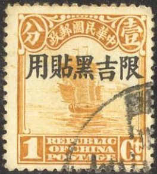

{kind=link}

Manchuria
Note: on my website many of the
pictures can not be seen! They are of course present in the
catalogue;
contact me if you want to purchase it.
Pagoda (with 5 Chinese characters on top)
1/2 f brown (two shades of brown were issued) 1 f red 1 f red-brown (1934) 1 1/2 f lilac 1 1/2 f violet (1934) 2 f grey 3 f brown 4 f olive (two shades were issued) 5 f green 6 f red 7 f grey 8 f yellow 10 f orange Pagoda (with 6 Chinese characters on top, 1934)
1/2 f brown 1 f red-brown 1 1/2 f lilac 3 f brown 4 f olive (1935) 5 f blue 6 f red 8 f yellow (1935) 9 f red President Pu (with 5 Chinese characters on top) 13 f brown 15 f red 16 f green 20 f brown 30 f orange 50 f green 1 Y lilac (two shades were issued) President (Emperor) Pu (with 6 Chinese characters on top, 1934) 13 f brown 15 f red 18 f green 20 f brown 30 f red-brown 50 f olive 1 Y lilac Surcharged (1934-35) with 4 Chinese characters only 1 f on 4 f olive 3 f on 4 f olive (overprint exists on both shades of olive) 3 f on 16 f green
1 f yellow (map and flags) 2 f green (president's house) 4 f red (design as 1 f) 10 f blue (design as 2 f)
1 1/2 f red-brown (emperor's palace) 3 f red (mythical bird, text curved at the bottom) 6 f green (design as 1 1/2 f) 10 f blue (design as 3 f)

2 f green (arms with star like figure) 2 1/2 f lilac (design as 2 f) 4 f olive (mountains) 8 f yellow (design as 2 f) 12 f red (design as 4 f) Surcharged 2 1/2 f on 2 f green (surcharged with 6 Chinese characters only) 5 f on 4 f olive (surcharged with 4 Chinese characters only)
1 1/2 f green (Mount Fuji) 3 f orange (mythical birds, text straight at the bottom) 6 f red (design as 1 1/2 f) 10 f blue (design as 3 f)

Example of a 1937 12 f orange stamp
Stamp of Manchuria, overprinted with Chinese characters
Later issue, with map of Manchuria
Airmail stamps of China, overprinted with red Chinese text for
use in Manchuria.

Stamp of China, overprinted with Chinese text to be used in
Manchuria in 1927
Stamps - Timbres-Poste - Briefmarken
{kind=link}